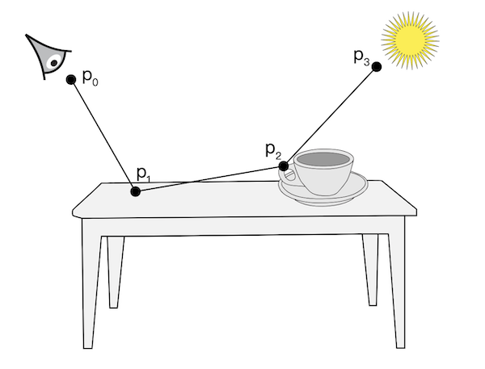
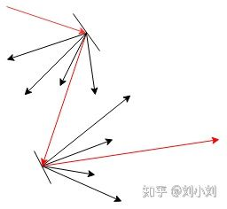
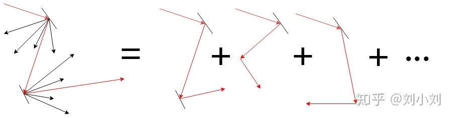
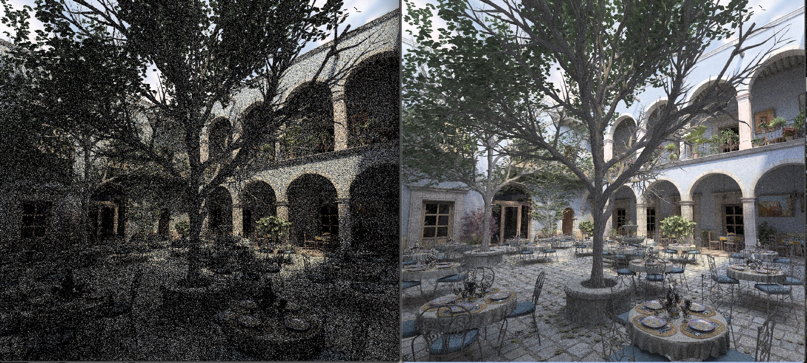
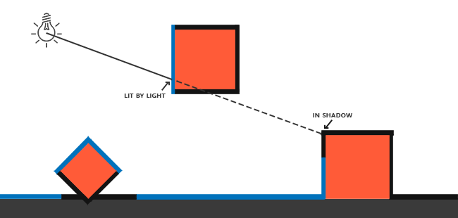
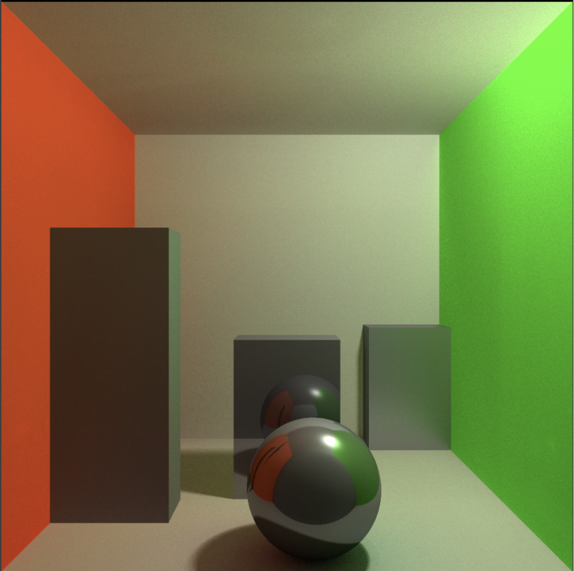
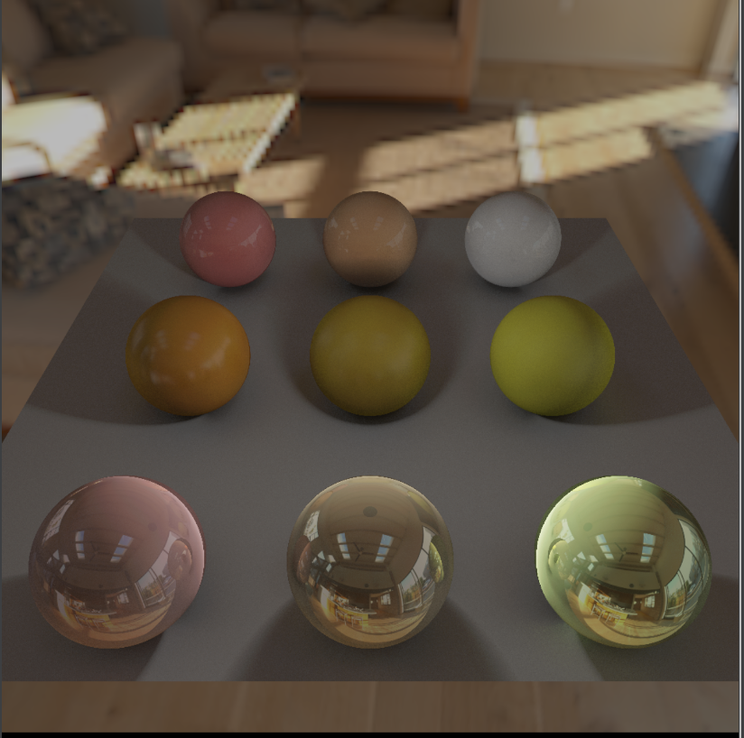

最近索尼跟微软都已经发布下世代游戏主机的硬件信息，随着NVDIA/AMD开始发布各自的硬件光线追踪管线，特别是微软的DXR发布，可以预见下一世代开始会有越来越多光线追踪的游戏发布。而光线追踪实际上是一个很古老的算法了，但是囿于计算成本非常高，虽然天然适合并行化，但在之前世代还是无法完全在实时场景中使用，而应用了光线追踪之后，对比原先实时渲染的各种对环境光反射的各种hack，光线追踪渲染的场景会对场景的光照质量提升明显一个档次：
可以看出来在使用了光线追踪之后，地板上更加真实的反射了场景中其他物体的光照，令整个场景显得更加真实
光线追踪算法本身并不复杂，大概原理可以用下面这张图来展示：

其算法就是，从Camera出发，发射一条光线，光线往前走，碰到物体后根据物体的材质进行光照计算出反射的颜色，然后根据物体的材质，反射出第二条光线，然后继续往前走，一直重复这个过程，直到光线到达了场景中的光源，或者直到找不到碰撞物体到达了无限远为止。而实际在应用的过程中，为了减少计算消耗，还会设置另外一个终止条件，例如反射到了若干次数之后停止迭代。而最终这条光线的颜色，就是当前光线最终的颜色了。
可以看出来，现代GPU，是天然适合并行化做这个事情的，对于OpenGL来说，我们可以在Fragment Shader中一个像素分别对应一条光线的发射，而且光线追踪算法本身各个点发射的光线本身是互不影响的，因此只要单个Shader就能完成整个光线追踪的任务。
而对于上面来说，上述只是求了一条光线的追踪路径，对于场景中的具体某个物体来说，只是求到了某次反射的结果，而场景中物体的真实光照效果，根据渲染方程，是需要求解物体表面法线方向上的半球积分内的累计光照：
如下图所示：

因此一个点上的颜色需要各个方向内的光照累计的总和，但这个积分是没法直接求解的，而单次渲染计算也没法直接渲染得出最终结果，因为实际光线的反射，因为材质的不同，往往不是只会反射单个方向的光线，而是会散射成多个方向（图源知乎见水印）：

因此在实际实现的时候，我们需要引用一个常用数学工具，使用蒙特卡洛方法，将多次渲染结果累加起来解决实际的积分问题（图源知乎见水印）：

蒙特卡洛方法在数学上的表示如下，对于某个积分\(\int_{a}^{b}f(x)\)，我们可以近似的计算为：
其中\(pdf(x_{i})\)为概率密度函数，从公式上可以看出，当我们渲染的次数越多的时候，就越符合最终计算的结果。
Android中光线追踪的实现
这篇文章的标题说的是实现“实时”的光线追踪，但事实上，对于现有的手机GPU管线来说，是不可能做到类似DXR那样的实时效果的，因此这里的“实时”光线追踪，实际上也只是渐进式渲染，通过多次渲染结果的叠加，我们实际上对于每个像素进行了多次采样，采样次数累加的越多，渲染结果越清晰（图源自pbrt）：

接下来我们来看下具体的实现，我们所有光线追踪的算法实现，均写在fragment shader中。
光线的生成
我们首先来看下光线的定义，空间中一条光线的定义，由原点跟方向来决定：
struct Ray {
vec3 origin;
vec3 direction;
};
vec3 pointAt(Ray ray, float t) {
return ray.origin + ray.direction * t;
}
另外为了算出这个光线在某个距离t上的坐标，我们定义了pointAt函数来计算，在定义了光线的数据结构之后，我们需要生成最初始的光线，根据前面的讨论，最初的光线需要从摄像头位置出发，我们再加了点随机的因子，配合计算摄像头的fov/aspect ratio，我们生成最初光线的代码如下：
Ray getInitRay() {
vec2 jitter = vec2((ran.x - 0.5) / $eachPassOutputWidth, (ran.y - 0.5) / $eachPassOutputHeight) * 0.5;
vec2 vPosJitter = vPos + jitter;
vec3 direction = vec3(vPosJitter, -1.0) * vec3(cameraAspect, 1.0, cameraFov);
direction = normalize(direction);
vec3 origin = cameraWorldMatrix[3].xyz;
direction = mat3(cameraWorldMatrix) * direction;
return Ray(origin, direction, false, false);
}
碰撞检测
我们想要在场景中渲染不同物体，对于光线追踪的框架来说，我们不能像类似光栅化的渲染那样直接定义物体Mesh顶点的坐标，我们需要对光线跟场景中所有物体求交，从中算出距离光线原点最近的表面，然后再计算表面的材质
例如对球体求交，我们有半径跟球心位置：
Intersection intersectSphere(Ray ray, Sphere sphere) {
Intersection intersect;
vec3 toSphere = ray.origin - sphere.center;
float a = dot(ray.direction, ray.direction);
float b = 2.0 * dot(toSphere, ray.direction);
float c = dot(toSphere, toSphere) - sphere.radius*sphere.radius;
float discriminant = b*b - 4.0*a*c;
if(discriminant > 0.0) {
float t = (-b - sqrt(discriminant)) / (2.0 * a);
if(t > 0.0) {
intersect.nearFar = vec2(t, t);
return intersect;
}
}
intersect.nearFar = vec2($infinity, $infinity);
return intersect;
}
求交之后返回光线的距离值t，另外，为了后面的材质计算，我们还需要计算物体交点表面的法线：
vec3 normalForSphere(vec3 hit, Sphere sphere) {
return normalize(hit - sphere.center);
}
更多的基础物体的求交限于篇幅就不列在这里了，推荐可以参考下这两个链接中的实现：
阴影处理
在处理了光线与物体的求交之后，我们就可以绘制出一个简单的光线追踪场景了，但在此之前，我想先谈下阴影的处理。在光栅化的渲染实现中，阴影的处理更多是通过生成阴影贴图(shadow mapping)的方式来处理，我们需要在光源的位置以面向物体的方向对场景渲染一次到深度贴图中生成shadow mapping。
而阴影的产生，则是因为从光源发射的光线被物体遮挡导致的：

如上图所示，阴影产生的原因是因为光源发射的光线被场景中的其他物体遮挡了，例如这里蓝线则是光源能够照射到的地方，黑色则代表阴影产生的地方。
因此对于光线追踪的框架来说，我们可以反过来，从场景中光线最近相交的的位置，往光源的方向发射一条光线出去跟场景中所有物体相交，如果最终有相交到的物体，说明这个物体刚好在阴影中，因为光源跟这个物体中间被其他物体遮挡了
float getShadow(Intersection intersection, vec3 lightDir) {
float shadow = 1.0;
Ray shadowRay = Ray(intersection.hit + intersection.normal * $eps, lightDir);
Intersection intersect = intersectScene(shadowRay);
shadow = if interest is 0 else 1
return shadow;
}
当getShdow返回0的时候，则当前交点处于阴影之中
光线追踪主循环
接下来，我们终于可以介绍渲染追踪的主循环了，在上图的介绍中，单次光线追踪的渲染步骤最后大概是这样：
- 获取到初始光线之后，跟场景所有物体求交
- 计算离光线原点最近的位置
- 计算这个位置上表面的材质，基于材质计算反射的颜色以及反射光线的方向
- 发射阴影光线，计算阴影颜色
- 根据最近交点位置，以及3中计算的反射光线的方向，初始化下一条反射的光线，然后重复上述流程
- 经过N次迭代，或者反射光线无法相交场景中任何物体，或者到达光源之后，停止循环
对于这篇文章实现的场景来说，我们只往里面添加最简单的点光源，因此整个迭代循环示意的大概是这样：
vec3 radiance = vec3(0.0);
vec3 throughput = vec3(1.0);
vec3 ambient = vec3(0.0);
for (int pass = 0; pass < $bounces; pass++) {
Intersection lightIntersect = intersectPointLight(ray, pointLight);
Intersection intersect = intersectScene(ray);
if (intersect.t == $infinity) {
ambient = getSkyboxColorByRay(ray); // 计算环境光
if (lightIntersect.nearFar.x > 0.0 && lightIntersect.nearFar.x < intersect.t) {
vec3 color = samplePointLight();
radiance += color * throughput * ambient;
} else {
radiance += ambient * throughput;
}
break;
}
// point light to intersection
vec3 pointLightDir = intersect.hit - pointDir;
// 根据材质计算反射光线
Ray newRay = materialRay(ray, intersect);
// 阴影计算
float shadow = getShadow(intersect, -pointLightDir);
// 计算材质表面颜色
throughput *= materialColor();
radiance += throughput * pointLightColor * shadow;
// 计算新的反射光线
newRay.origin = intersect.hit + newRay.direction * $eps;
ray = newRay;
}
// 最终输出颜色
vec3 color = max(radiance,vec3(0.0));
整个迭代循环大概如此，注意到当我们跟场景中物体没有交点的时候，才去判断是否到达了光源，另外，最后我们还计算了环境光反射
渲染结果叠加
上述只是单次渲染结果的循环，因为循环迭代次数有限，因此单次drawcall绘制的结果往往会有明显的噪点，在最初介绍光线追踪时候提到使用蒙特卡洛方法对多次渲染结果叠加，因此，实际实现的时候我们会做成一个Ping-Pong纹理，将单次渲染的结果输出到单独纹理上，然后上一次结果跟当次渲染结果叠加再输出到另外一张纹理上，循环往复。这里我们对上次渲染结果以及当次渲染结果进行加权平均：
其中\(w\)为
\(count\)为迭代的次数，这样子在经过多次叠加渲染之后，场景就会越加清晰：

上图分别迭代了5次跟350次之后的渲染效果，可以看出来随着迭代次数的增加，场景中的噪点越来越少
表面材质
我们讨论完了光线追踪的主循环之后，接下来我们要聊聊表面材质的实现，首先，最基础的我们可以实现Blinn-Phong光照模型，例如下图的Cornell Box

除此以外，我们还可以实现基于PBR的光照材质，接下来我们重点来说下其实现。首先，我们来看下PBR的BRDF公式：
公式坐标是漫反射的计算，右边是高光部分的计算，其中\(D\)，\(F\)，\(G\)则分辨是法线分布函数，Fresnel项，几何函数，这里我们分别采用几个近似函数：
法线分布函数：
Fresnel项
几何函数：
在有了这些函数之后，对于直接光照明颜色（这篇文章场景中只有一个点光源）的计算，我们可以直接套用公式计算出来：
vec3 brdfLightColor(vec3 N, vec3 L, vec3 V, vec3 lightColor, Material material) {
vec3 baseColor = material.color;
float roughness = material.roughness;
float metallic = material.metallic;
float specular = material.specular;
vec3 F0 = vec3(0.08);
F0 = mix(F0, baseColor, metallic);
vec3 H = normalize(V + L);
float NdotL = max(0.0, dot(N, L));
float NdotH = max(0.0, dot(N, H));
float VdotH = max(0.0, dot(V, H));
float NdotV = max(0.0, dot(N, V));
float NDF = DistributionGGX(N, H, roughness);
float G = GeometrySmith(N, V, L, roughness);
vec3 F = fresnelSchlick(VdotH, F0);
vec3 nominator = NDF * G * F;
float denominator = 4.0 * NdotV * NdotL;
vec3 specularColor = nominator / max(denominator, 0.001); // prevent divide by zero for NdotV=0.0 or NdotL=0.0
vec3 diffuseColor = baseColor / $pi;
vec3 radiance = (diffuseColor + specularColor) * lightColor * NdotL;
return radiance;
}
而对于环境光部分，我们需要使用半球积分来计算半球空间中所有环境光的总和：
漫反射部分为：
高光部分为：
对于这个积分，我们继续使用蒙特卡洛方法来求解，对于pdf的选取，本文不会进行推导，我直接列出来：
漫反射的pdf为：
高光部分的pdf为：
对应代码实现为：
float brdfMaterialPdf(vec3 N, vec3 L, vec3 V, Material material, bool diffuse) {
vec3 baseColor = material.color;
float metallic = material.metallic;
float roughness = material.roughness;
float specular = material.specular;
N = normalize(N);
L = normalize(L);
V = normalize(V);
vec3 H = normalize(V + L);
float NdotL = max(0.0, dot(N, L));
float NdotH = max(0.0, dot(N, H));
float VdotH = max(0.0, dot(V, H));
if (diffuse) {
return NdotL / $pi;
} else {
float NDF = DistributionGGX(N, H, roughness);
return NDF * NdotH / (4.0 * VdotH);
}
}
而材质本身的颜色我们也需要进行计算：
vec3 brdfMaterialColor(vec3 N, vec3 L, vec3 V, Material material, bool diffuse) {
vec3 baseColor = material.color;
float metallic = material.metallic;
float roughness = material.roughness;
float specular = material.specular;
N = normalize(N);
L = normalize(L);
V = normalize(V);
vec3 H = normalize(V + L);
float NdotL = max(0.0, dot(N, L));
float NdotH = max(0.0, dot(N, H));
float VdotH = max(0.0, dot(V, H));
float NdotV = max(0.0, dot(N, V));
vec3 color = vec3(0);
vec3 F0 = vec3(0.08);
F0 = mix(F0, baseColor, metallic);
vec3 F = fresnelSchlick(VdotH, F0);
if (diffuse) {
if (NdotL > 0.0) {
color = baseColor;
}
} else {
// Specular Environment BRDF
float G = GeometrySmith(N, V, L, roughness);
float Vis = (G * VdotH) / (NdotH * NdotV);
specularColor *= NdotL;
color = specularColor;
}
return color;
}
注意这里在计算高光项的时候并没有乘上\(D\)，这是因为在PDF中被消除掉了
另外，对于光线追踪来说，我们还需要根据PBR材质的参数来计算反射光线的方向，对于漫反射跟高光，分别需要的计算不太一样，漫反射只需要直接半球均匀采样，高光则需要进行重要性GGX采样，这里我们使用根据随机值来判断当前反射是需要漫反射还是高光反射：
vec3 brdfRayDir(vec3 N, vec3 V, Material material, int bias, out bool isDiffuseRay) {
float u = random(bias);
float v = random(frame);
vec2 uv = vec2(u, v);
float metallic = material.metallic;
float roughness = material.roughness;
vec3 dir;
float diffuseRatio = 0.5 * (1.0 - metallic);
vec3 up = abs(N.z) < 0.999 ? vec3(0.0, 0.0, 1.0) : vec3(1.0, 0.0, 0.0);
vec3 tangentX = normalize(cross(up, N));
vec3 tangentY = normalize(cross(tangentX, N));
if (random(bias) < diffuseRatio) {
// diffuse irradiance sample
dir = CosineSampleHemisphere(u, v);
dir = tangentX * dir.x + tangentY * dir.y + N * dir.z;
dir = normalize(dir);
isDiffuseRay = true;
return dir;
} else {
// specular radiance sample
dir = ImportanceSampleGGX(uv, V, roughness);
isDiffuseRay = false;
return dir;
}
}
这里两步实际上是相当于实现了上一篇文章中介绍的环境光的预计算采样，但在光线追踪的框架下，我们可以以其原来的数学形式进行真正的采样，但这里随机采样的样本并不是真正的低差异序列，最终计算出来的重要性采样效果会有一点区别。
最终我们对于PBR材质渲染结果如下：

本文所有代码都放到的Github上：AndroidRayTracing
Summary
本篇文章对于光线追踪的介绍目前就到这里为止，对于这里实现的光线追踪来说，后续还有很多地方需要实现，例如BVH，模型/纹理载入，Camera操作，双向路径追踪，以及更多材质的支持等等。。这里还有非常多可以学习的地方，本人作为一名图形学小白，文章也可能有诸多疏漏，仅供参考
References
- http://www.pbr-book.org/3ed-2018/Light_Transport_I_Surface_Reflection/Path_Tracing.html
- http://www.pbr-book.org/3ed-2018/Monte_Carlo_Integration/Importance_Sampling.html
- http://www.pbr-book.org/3ed-2018/Light_Transport_I_Surface_Reflection/Sampling_Light_Sources.html
- http://iquilezles.org/www/articles/intersectors/intersectors.htm
- https://www.shadertoy.com/view/4tXyWN
- https://zhuanlan.zhihu.com/p/58692781
- https://learnopengl-cn.github.io/07%20PBR/03%20IBL/01%20Diffuse%20irradiance/
- https://learnopengl-cn.github.io/07%20PBR/03%20IBL/02%20Specular%20IBL/